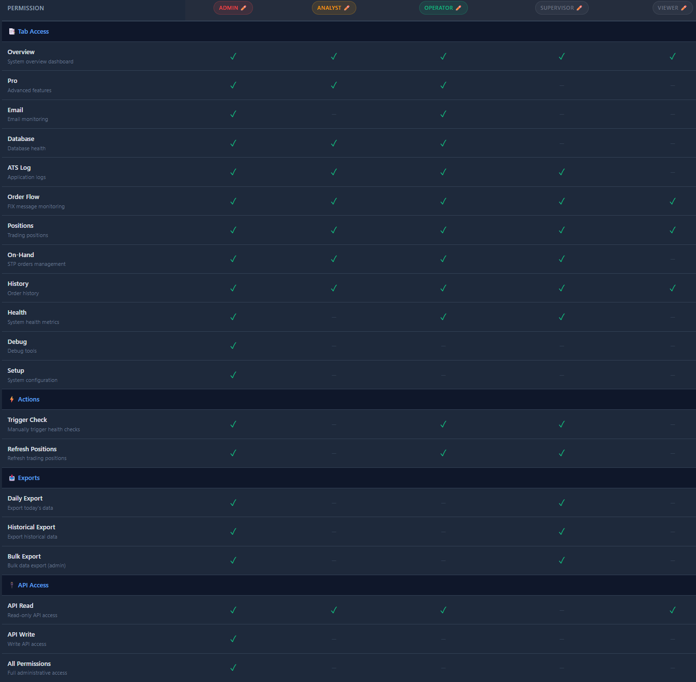

Category: Trading System Administration - Access Control Last Updated: 2025-12-17 Author: ATS Production Team Version: 1.1 Review Date: 2026-03-17 Status: Active
This procedure covers the Role-Based Access Control (RBAC) system in ATS Health Monitor, including user management, role configuration, password policies, and security compliance features.
Key Features: - PostgreSQL-backed user and role management - SFC/PCI-DSS compliant password policies (90-day rotation) - First login password change enforcement - Account lockout after failed attempts - Real-time audit logging - GUI-based role and user administration
When to Use:
flowchart TD
Start([New User Setup]) --> Admin[Admin Creates User]
Admin --> Default[User Gets Default Password]
Default --> Login[User Logs In]
Login --> Change{Must Change Password?}
Change -->|Yes| NewPwd[Enter New Password]
Change -->|No| Dashboard[Access Dashboard]
NewPwd --> Validate{Password Valid?}
Validate -->|No, < 12 chars| NewPwd
Validate -->|Yes| Dashboard
Dashboard --> Access{Has Permission?}
Access -->|Yes| Feature[Use Feature]
Access -->|No| Denied[Permission Denied]
Feature --> Expiry{Password Expiring?}
Expiry -->|< 14 days| Warning[Show Warning]
Expiry -->|> 14 days| Continue[Continue]
Warning --> Continue
Continue --> Dashboard
| Item | Value |
|---|---|
| Default Password | default |
| Minimum Password Length | 12 characters |
| Password Expiry | 90 days |
| Warning Period | 14 days before expiry |
| Max Failed Attempts | 5 (then 30 min lockout) |
| Step | Action | Notes |
|---|---|---|
| 1 | Navigate to ATS Health Monitor URL | Contact admin for URL |
| 2 | Enter username and password default |
Temporary password |
| 3 | Change password when prompted | Min 12 characters |
| 4 | Access dashboard | Based on assigned role |
| Step | Action | Location |
|---|---|---|
| 1 | Go to Access Control tab | Left navigation |
| 2 | View Roles Matrix | First sub-tab |
| 3 | Manage Users | Users sub-tab |
| 4 | Review Audit Log | Audit Log sub-tab |
| Role | Access Level | Best For |
|---|---|---|
| Admin | All features + user management | System administrators |
| Operator | Monitor + execute actions | Operations team |
| Analyst | View + export data | Data analysts, compliance |
| Viewer | Dashboard viewing only | Stakeholders, read-only access |

Figure 1: Roles Matrix showing permissions for each role. Click role header to edit.
| Permission | Description | Admin | Operator | Analyst | Viewer |
|---|---|---|---|---|---|
| Overview | System dashboard | ✓ | ✓ | ✓ | ✓ |
| Email monitoring | ✓ | ✓ | – | – | |
| Database | Database health | ✓ | ✓ | ✓ | – |
| ATS Log | Application logs (V2) | ✓ | ✓ | ✓ | – |
| Order Flow (V2) | FIX message monitoring | ✓ | ✓ | ✓ | ✓ |
| ↳ Ghost STP | Cancelled STP detection | ✓ | ✓ | ✓ | ✓ |
| ↳ Multi-Venue | Multi-exchange routing | ✓ | ✓ | ✓ | – |
| ↳ Patterns | Order pattern analysis | ✓ | ✓ | ✓ | – |
| Pos History (V2) | MSSQL round trips with V2 drill-down | ✓ | ✓ | ✓ | ✓ |
| OnHand Pos (V2) | On-hand orders with V2 API | ✓ | ✓ | ✓ | – |
| History | Order history timeline | ✓ | ✓ | ✓ | ✓ |
| Health | System metrics | ✓ | ✓ | ✓ | – |
| Debug | Debug tools | ✓ | – | – | – |
| Setup | Configuration | ✓ | – | – | – |
| Access Control | RBAC management | ✓ | – | – | – |
| Help | Reference guide | ✓ | ✓ | ✓ | ✓ |
Note: V2 tabs use the upgraded API endpoints that query sfc_fix.messages_parsed with millisecond precision.
| Permission | Description | Admin | Operator | Analyst | Viewer |
|---|---|---|---|---|---|
| Trigger Check | Manual health checks | ✓ | ✓ | – | – |
| Refresh Positions | Sync MSSQL data | ✓ | ✓ | ✓ | – |
| Permission | Description | Admin | Operator | Analyst | Viewer |
|---|---|---|---|---|---|
| Daily Export | Export today's data | ✓ | ✓ | ✓ | – |
| Historical Export | Export past data | ✓ | ✓ | ✓ | – |
| Bulk Export | Large data exports | ✓ | – | ✓ | – |
| Permission | Description | Admin | Operator | Analyst | Viewer |
|---|---|---|---|---|---|
| API Read | Read-only API | ✓ | ✓ | ✓ | ✓ |
| API Write | Write API | ✓ | – | – | – |
| All (*) | Full admin | ✓ | – | – | – |
Procedure:
Result:
- User created with password default
- must_change_password flag set to true
- User must change password on first login
Procedure:
Procedure:
Result:
- Password updated
- must_change_password set to true
- User must change password on next login
Procedure:
Result: - User cannot login - Existing sessions invalidated - Audit log entry created
| Setting | Value | Compliance Standard |
|---|---|---|
| Password Expiry | 90 days | SFC, PCI-DSS |
| Warning Period | 14 days before expiry | Enterprise standard |
| Minimum Length | 12 characters | Enterprise standard |
| Max Failed Attempts | 5 attempts | PCI-DSS |
| Lockout Duration | 30 minutes | PCI-DSS |
| First Login | Must change password | Best practice |
| Indicator | Meaning | Action Required |
|---|---|---|
| ✓ Green + days | Password valid | None |
| ⚠️ Yellow + days | Expiring soon (≤14 days) | Change recommended |
| 🔴 Expired | Password expired | Must change now |
Procedure:
Requirements: - Minimum 12 characters - Cannot reuse current password - Valid for 90 days
| Role | Description | Can Delete? |
|---|---|---|
| admin | Full administrative access | No |
| operator | Operations team - monitor and execute | No |
| analyst | Analysts - view and export data | No |
| viewer | Read-only dashboard access | No |
Procedure:
compliance_officer)Procedure:
Note: Built-in roles cannot be deleted but can be edited.
| Event | Description | Logged Data |
|---|---|---|
login |
Successful login | Username, IP, timestamp |
login_failed |
Failed login attempt | Username, IP, reason |
logout |
User logout | Username, IP, timestamp |
password_changed |
Password change | Username, IP, expiry date |
create_user |
New user created | Username, roles, created_by |
update_user |
User modified | Username, changes, modified_by |
delete_user |
User deleted | Username, deleted_by |
create_role |
New role created | Role name, permissions |
update_role |
Role modified | Role name, changes |
account_locked |
Account locked | Username, failed attempts |
Procedure:
| Issue | Cause | Solution |
|---|---|---|
| "Account Locked" | 5 failed login attempts | Wait 30 minutes, then retry |
| "Password Expired" | Password > 90 days old | Login and change password |
| "Permission Denied" | Missing role permission | Contact admin for access |
| "Invalid Credentials" | Wrong username/password | Verify credentials, check Caps Lock |
| "Must Change Password" | First login or reset | Enter new password (min 12 chars) |
If all admin accounts are locked:
-- Unlock admin account
UPDATE rbac_users
SET locked_until = NULL, failed_login_count = 0
WHERE username = 'admin';
| Document | Description |
|---|---|
| ATS Health Monitor - Complete Guide | Full system documentation |
| ATS Health Monitor - Production Deployment Guide | Deployment procedures, database migration, multi-site setup |
| FIX Log Monitor - SFC Compliance | FIX protocol monitoring |
| ATS JDBC Connection Monitor | Database monitoring |
| Version | Date | Author | Changes |
|---|---|---|---|
| 1.1 | 2025-12-17 | ATS Production Team | Production Deployment Reference: Added link to new Production Deployment Guide. Password Compatibility: Clarified that bcrypt password hashes remain valid across deployments (no reset needed). V2 Tab Permissions: Updated for V2 upgrades - Order Flow sub-tabs (Ghost STP, Multi-Venue, Patterns), Pos History (was Positions), OnHand Pos (was On-Hand). All V2 tabs query sfc_fix.messages_parsed with millisecond precision. |
| 1.0 | 2025-12-09 | ATS Production Team | Initial release - PostgreSQL RBAC |
For access issues, contact: - System Administrator: [Your admin contact] - Email: [Support email]
For urgent trading issues: - Operations Team: [Ops contact]